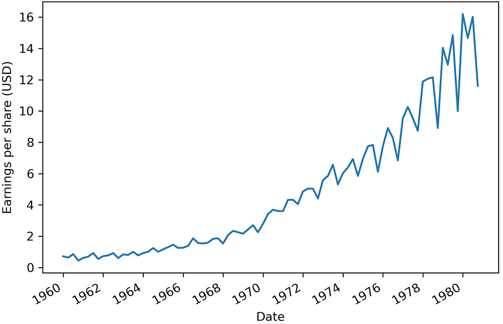
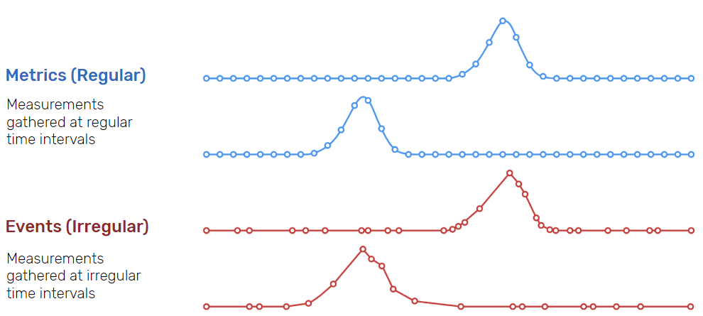
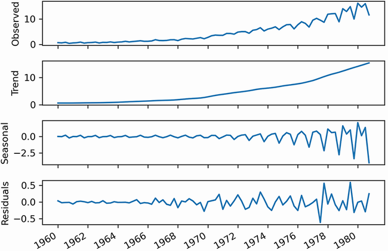

Series temporales
Introducción¶
Una serie temporal es un conjunto de valores que se miden y, por lo tanto, se almacenan de forma secuencial en el tiempo, de manera que el orden cronológico es fundamental.
Estos valores normalmente se miden en intervalos regulares de tiempo, de manera que están espaciados en el tiempo con la misma separación temporal, ya sean horas, minutos, días, meses, trimestres, etc... La forma más sencilla de comenzar el análisis de una serie temporal es mediante su representación gráfica. En el eje X (horizontal) se representa el tiempo, y en el eje Y (vertical), los valores a analizar:

En IoT, cada sensor genera datos etiquetados con un timestamp (marca temporal).
Al capturar datos de series temporales a lo largo de un periodo determinado, podemos observar cómo ha evolucionado o cambiado el sistema, lo que ayuda a identificar tendencias, tomar medidas proactivas o hacer predicciones futuras. Por ejemplo, trabajamos con datos de series temporales cuando revisamos el uso de CPU y memoria de un servidor durante la última semana, exploramos las fluctuaciones del tipo de cambio de divisas durante los últimos tres meses o analizamos las constantes vitales de un paciente recogidas durante el último año.
Tipos¶
Las series temporales se caracterizan por una generación regular (métrica) o irregular (evento) de periodos temporales. Además, implican grandes volúmenes de datos, como pueden ser ficheros de logs o sensórica de elementos IoT, los cuales tienen una alta frecuencia de creación.

Dadas estas características, las series temporales se emplean principalmente para la predicción y análisis de tendencias en muchos servicios financieros y aplicaciones IoT.
Características¶
Toda serie temporal tiene dos características clave:
- Cada punto de datos incluye la hora asociada a la medición o evento.
- Los datos de series temporales son, por naturaleza, de tipo "append-only", lo que significa que una vez registrada y almacenada una medición o evento, nunca se actualiza.
Si nos centramos en las características de los datos provenientes de sensórica IoT, podemos destacar:
- Dependencia temporal: los datos cercanos en el tiempo suelen estar correlacionados.
- Tamaño creciente: en IoT, los datos llegan en flujo continuo (data stream).
- Importancia del tiempo: el análisis depende tanto del valor como del momento.
- Alta frecuencia de muestreo: Los sensores pueden generar datos a intervalos muy cortos (por ejemplo, cada milisegundo).
- Variabilidad en la calidad de los datos: Los datos pueden verse afectados por interferencias, ruido o fallos en el sensor.
Sus valores pueden ser:
- discretos: entre un conjunto finito de valores, por ejemplo, la cantidad de hermanos en una familia. Se suelen expresar mediante un número entero.
- continuos: tienen un cantidad infinita de valores y se expresan mediante número reales, por ejemplo, la temperatura que recoge un sensor.
Descomposición¶
La descomposición de una serie temporal consiste en separar la serie original en sus distintos componentes para poder analizarlos de manera individual y entender mejor su comportamiento.
Al descomponer una serie temporal, se obtienen tres gráficos o partes principales:
- Tendencia (Trend), cuando el crecimiento o su decrecimiento es constante conforme avanza el tiempo, y representa el cambio a largo plazo de la serie.
- Estacionalidad (Seasonal), cuando la serie se repite en patrones periódicos a modo de temporadas, representando fluctuaciones que se repiten en periodos fijos.
- Residual / Remanente (Residuals), son aquellas irregularidades o ruido que no son explicables por la tendencia ni la estacionalidad.
Visualizar estos componentes por separado facilita el análisis de la serie temporal, ya que permite identificar patrones, detectar anomalías y comprender mejor qué factores influyen en su comportamiento:

Si analizamos cada gráfica tenemos que:
- La serie original (observed) muestra los datos recogidos.
- La tendencia muestra los cambios suavizados, como si dibujásemos una línea a través de la mayoría de puntos para mostrar la dirección de la serie.
- La estacionalidad captura los ciclos que se repiten mediante un patrón. En esta caso, el eje Y cambia, partiendo de 0 si se mantiene, un valor positivo, si supone un incremento del valor original o negativo si baja su valor. En el gráfico, se puede observar como en un mismo año, las acciones comienzan arriba, para luego bajar y volver a subir.
- Si juntásemos la tendencia y la estacionalidad, idealmente, deberíamos obtener la serie original. Pero esto no suele ser la realidad. Los valores residuales a 0 indican que la unión de tendencia y la estacionalidad dan el valor de la serie original. En el resto de casos, corresponde al ruido blanco que no podemos modelar y predecir y que necesitamos para obtener la serie original.
Además de estos tres elementos, en algunas series temporales aparece una cuarta componente llamada ciclo (cycle), que son fluctuaciones que se producen a lo largo del tiempo con cierta regularidad, pero sin un periodo fijo ni predecible. A diferencia de la estacionalidad, los ciclos no se repiten siempre cada el mismo intervalo de tiempo y suelen estar asociados a procesos físicos, económicos o de uso.
Por ejemplo, ciclos económicos de expansión y recesión, o ciclos de carga y descarga de una batería en uso, cuya duración y frecuencia dependen del patrón de utilización y no de un calendario fijo.
En resumen, una serie temporal puede descomponerse en:
| Componente | Descripción | Ejemplo |
|---|---|---|
| Tendencia (Trend) | Cambio a largo plazo | Aumento progresivo de temperatura media en 5 años |
| Estacionalidad (Seasonality) | Patrón que se repite de forma periódica | Pico de tráfico en una red cada día a las 20:00 |
| Ciclo (Cycle) | Fluctuaciones no regulares pero de cierta periodicidad | Ciclos de carga de una batería en uso |
| Ruido (Noise) | Variación aleatoria sin patrón | Lecturas erráticas por interferencia electromagnética |
Almacenamiento¶
Las principales opciones tecnológicas para almacenar datos IoT pueden agruparse en varios niveles y tipos de sistemas:
-
Almacenamiento en el propio dispositivo (Edge / On-device)
En algunos escenarios, los datos se almacenan localmente en el propio dispositivo IoT o en nodos cercanos, los cuales tienen memorias SD que permiten su funcionamiento incluso sin conexión a la red.
-
Edge Computing y Gateways IoT
Entre los dispositivos y la nube suele existir una capa intermedia llamada gateway, el cual se encarga de agregar los datos de múltiples sensores, realizando un preprocesamiento y reducción de los datos para realizar un envío selectivo a sistemas remotos.
-
Bases de datos de series temporales (TSDB)
Productos como InfluxDB o TimescaleDB (desde junio del 25 se ha renombrado a TigerData), los cuales están optimizadas para datos indexados por tiempo, con una alta eficiencia en escritura continua y permitiendo realizar consultas por rangos temporales. Entre sus ventajas conviene destacar que son muy adecuadas para sensores y métricas, tienen un buen rendimiento en grandes volúmenes de datos, ya que los datos se almacenan comprimidos y optimizados por tiempo, y facilitan el análisis histórico
-
Bases de datos NoSQL.
Son muy utilizadas en IoT debido a su flexibilidad y escalabilidad horizontal, y aunque tienen menos funciones específicas para series temporales que las anteriores, están añadiéndolas como funcionalidades extra. Por ejemplo, tanto MongoDB mediante las colecciones de series temporales o Redis, con el módulo TimeSeries, permiten almacenar y consultar datos de series temporales
-
Bases de datos relacionales.
Aunque no siempre son la opción principal, las bases de datos relacionales siguen siendo útiles en ciertos contextos IoT. Dicho esto, dentro del campo del Big Data, no se recomienda su uso para ingestas masivas ni con altas frecuencias.
Uso de Pandas¶
A la hora de trabajar con datos que contienen series temporales en Pandas, la clave reside en que el índice del DataFrame sea de tipo DatetimeIndex.
La forma más común de lograr esto es asegurarse de que la columna que contiene las fechas esté en el formato correcto y luego establecerla como índice.
Para ello, podemos utilizar las siguientes funciones de Pandas:
pd.to_datetime: convierte una Serie o un valor en un valor timestamp, infiriendo el formato recorriendo toda los datos de la Seriepd.to_timedelta: convierte una Serie en una diferencia absoluta de tiempopd.date_range(): permite generar secuencias de fechas/tiempos
Vamos a realizar un ejemplo sencillo, con los datos del Ibex35 extraídos de Yahoo Finance.
El primer paso es cargar el DataFrame y ver su estructura
import pandas as pd
ibex = pd.read_csv("ibex35_2020_2025.csv")
Si comprobamos su contenido, vemos que tenemos un campo Date con la fecha de cada valor:
ibex.head()
# Date Close High Low Open Volume
# 0 2020-01-02 9691.200195 9705.400391 9615.099609 9639.099609 142379600
# 1 2020-01-03 9646.599609 9650.700195 9581.200195 9631.200195 135130000
# 2 2020-01-06 9600.900391 9618.200195 9492.700195 9585.400391 103520400
# 3 2020-01-07 9579.799805 9657.900391 9557.900391 9623.099609 133476100
# 4 2020-01-08 9591.400391 9604.299805 9520.299805 9535.099609 133957600
Para asegurarnos de que la columna Date se interprete correctamente como un índice de tipo DatetimeIndex, podemos utilizar la función pd.to_datetime() para convertirla antes de establecerla como índice.
ibex['Date'] = pd.to_datetime(ibex['Date'])
ibex.set_index('Date', inplace=True)
Otra forma más rápida es cargar directamente el CSV indicando qué columna queremos utilizar como indice:
ibex = pd.read_csv("ibex35_2020_2025.csv", parse_dates=["Date"], index_col="Date")
En ambos casos, obtenemos un DataFrame con la siguiente información:
ibex.head()
# Close High Low Open Volume
# Date
# 2020-01-02 9691.200195 9705.400391 9615.099609 9639.099609 142379600
# 2020-01-03 9646.599609 9650.700195 9581.200195 9631.200195 135130000
# 2020-01-06 9600.900391 9618.200195 9492.700195 9585.400391 103520400
# 2020-01-07 9579.799805 9657.900391 9557.900391 9623.099609 133476100
# 2020-01-08 9591.400391 9604.299805 9520.299805 9535.099609 133957600
Operaciones¶
Una vez tenemos el DataFrame con el índice de tipo DatetimeIndex, podemos realizar diversas operaciones y análisis sobre la serie temporal.
Por ejemplo, podemos filtrar los datos con un valor concreto o utilizando subconjuntos de la propia fecha:
# Un valor concreto
ibex250602 = ibex.loc['2025-06-02']
# Todos los valores de un mes
ibex2506 = ibex.loc['2025-06']
# Todos los valores de un año
ibex25 = ibex.loc['2025']
Una vez tenemos un conjunto de datos, podemos obtener información sobre los índices accediendo a la propiedad index y a partir de ahí, a sus propiedades month, year, is_quarter_end, etc...
Por ejemplo, si partimos del DataFrame con los valores de año 2025:
ibex25.index.month, ibex25.index.year
# (Index([1, 1, 1, 1, 1, 1, 1, 1, 1, 1,
# ...
# 7, 8, 8, 8, 8, 8, 8, 8, 8, 8],
# dtype='int32', name='Date', length=157),
# Index([2025, 2025, 2025, 2025, 2025, 2025, 2025, 2025, 2025, 2025,
# ...
# 2025, 2025, 2025, 2025, 2025, 2025, 2025, 2025, 2025, 2025],
# dtype='int32', name='Date', length=157))
Un caso particular es is_quarter_end, el cual devolverá una lista con True en aquellos días que son el último día de un trimestre. Si lo usamos para localizar dichos elementos, el resultado son los días finales de cada trimestre, independientemente de si es el 30 o el 31 del mes en cuestión:
ibex25.loc[ibex25.index.is_quarter_end]
# Close High Low Open Volume
# Date
# 2025-03-31 13135.400391 13249.799805 13051.799805 13224.599609 167060300
# 2025-06-30 13991.900391 14029.099609 13894.400391 14025.599609 110470200
También podemos seleccionar un subconjunto por un rango temporal:
ibex24 = ibex['2024-01-01 00:00':'2025-01-01 00:00']
ibex24.shape
# (256, 5)
La operación de resampling (utilizando la función resample) permite cambiar la frecuencia de los datos temporales, ya sea aumentando o disminuyendo la granularidad a días (D), meses (M), trimestres (Q), años (A), etc...
El remuestreo es similar a una consulta group by, salvo que en lugar de producir un resultado por valor de una columna, obtenemos un resultado por fragmento temporal, empezando por el punto más antiguo y terminando por el más reciente.
Por ejemplo, podemos obtener la media mensual de los datos (fíjate que el índice ha tomado como valor el último día de cada mes):
media_mensual = ibex24.resample('M').mean()
media_mensual.head()
# Close High Low Open Volume
# Date
# 2024-01-31 10016.259011 10069.972701 9957.822665 10020.490945 1.312984e+08
# 2024-02-29 10003.104771 10053.933315 9961.880999 10014.028506 1.414177e+08
# 2024-03-31 10571.425049 10605.965039 10504.600000 10521.364941 1.776267e+08
# 2024-04-30 10870.609561 10942.638021 10807.738281 10880.161877 1.746393e+08
# 2024-05-31 11199.186346 11236.586337 11134.386364 11178.250044 1.707392e+08
Tras el resampling, podemos realizar las agregaciones que queramos con la función agg():
media_mensual.agg(['mean', 'min', 'max'])
# Close High Low Open Volume
# mean 11044.879507 11099.089394 10982.163324 11039.518731 1.316156e+08
# min 10003.104771 10053.933315 9957.822665 10014.028506 9.708670e+07
# max 11783.330460 11838.421748 11717.534774 11784.673998 1.776267e+08
Otras operación que podemos realizar es desplazarnos sobre los datos utilizando la operación shift, pudiendo simular las funciones ventana lag y lead (anterior y siguiente). Por ejemplo, para crear dos columnas con los valores de cierre anteriores y posteriores, podemos hacer:
media_mensual['Close_lag'] = media_mensual['Close'].shift(1)
media_mensual['Close_lead'] = media_mensual['Close'].shift(-1)
media_mensual.head()
# Close High Low Open Volume Close_lag Close_lead
# Date
# 2024-01-31 10016.259011 10069.972701 9957.822665 10020.490945 1.312984e+08 NaN 10003.104771
# 2024-02-29 10003.104771 10053.933315 9961.880999 10014.028506 1.414177e+08 10016.259011 10571.425049
# 2024-03-31 10571.425049 10605.965039 10504.600000 10521.364941 1.776267e+08 10003.104771 10870.609561
# 2024-04-30 10870.609561 10942.638021 10807.738281 10880.161877 1.746393e+08 10571.425049 11199.186346
# 2024-05-31 11199.186346 11236.586337 11134.386364 11178.250044 1.707392e+08 10870.609561 11160.760059
Mediante la función rolling podemos calcular estadísticas móviles sobre la serie temporal. Por ejemplo, para calcular la media móvil de los últimos 5 períodos:
media_movil = media_mensual.rolling(window=5).mean()
media_movil.head()
# Close High Low Open Volume Close_lag Close_lead
# Date
# 2024-01-31 NaN NaN NaN NaN NaN NaN NaN
# 2024-02-29 NaN NaN NaN NaN NaN NaN NaN
# 2024-03-31 10196.929610 10243.290351 10141.434555 10185.294797 1.501143e+08 NaN 10481.713127
# 2024-04-30 10481.713127 10534.178792 10424.739760 10471.851775 1.645612e+08 10196.929610 10880.406985
# 2024-05-31 10880.406985 10928.396466 10815.574882 10859.925621 1.743351e+08 10481.713127 11076.851988
Finalmente, podemos realizar una interpolación de los datos utilizando la función interpolate para rellenar los valores nulos:
media_filled = media_mensual.interpolate(method="linear", limit_direction='both')
media_filled.head(3)
# Close High Low Open Volume Close_lag Close_lead
# Date
# 2024-01-31 10016.259011 10069.972701 9957.822665 10020.490945 1.312984e+08 10016.259011 10003.104771
# 2024-02-29 10003.104771 10053.933315 9961.880999 10014.028506 1.414177e+08 10016.259011 10571.425049
# 2024-03-31 10571.425049 10605.965039 10504.600000 10521.364941 1.776267e+08 10003.104771 10870.609561
Referencias¶
- Time Series Data Analysis
- Repositorios GitHub (Timeseries de DataForScience y AdvancedTimeseries de DataForScience) con diversos cuadernos para trabajar con series temporales
- Análisis y Predicción de Series de Tiempo - Dr. Lihki Rubio
Proyecto¶
Vamos a realizar un proyecto para predecir el uso de energía mediante la relación entre su consumo y una variedad de factores como la temperatura, la hora, el día de la semana así como otras variables que lleguemos a considerar.
Necesitamos previsiones precisas, ya que hacer previsiones demasiado bajas o demasiado altas tiene sus inconvenientes. La única manera de ganar precisión en las previsiones es entender qué factores influyen en el consumo energético de las personas. Los datos sobre temperatura y energía están probablemente relacionados. Cuanto más calor o frío hace en el exterior, más energía podrían utilizar los edificios de oficinas y los hogares para gestionar la temperatura.
Para este proyecto vamos a utilizar dos datasets, uno con datos de temperaturas por horas (ts_load_metered_20170201_20200131.csv con el campo DATE como fecha) de una estación meteorológica, y otro con el consumo en megavatios (ts_temp_20170201-20200131.csv con el campo datetime_beginning_ept como fecha). Ambos datasets ya se han limpiado para que sólo incluyan un registro por hora.
Los pasos que vamos a realizar son:
-
Prepara los datos:
- Carga los conjuntos de datos de energía y temperatura en un único DataFrame uniéndolos por fecha. El resultado sólo debe contener como campos, además de la fecha en formato datetime64, el uso de megavatios por hora (
mwde los datos de energía) y la temperatura (HourlyDryBulbTemperaturede los datos meteorológicos). - Añade nuevas columnas para la hora del día, el día de la semana, el mes y el año de cada registro, y utiliza la fecha como el índice del DataFrame.
- Revisa si están rellenados todos los datos de temperatura. Si no es así, utiliza la interpolación lineal para fijar estos valores que faltan.
- Separa el resultado en conjuntos de datos de entrenamiento (hasta nochevieja de 2019) y de prueba (enero de 2020).
Correlación
La correlación mide la fuerza de la relación lineal entre dos variables continuas. Está limitada entre -1 y 1. Los valores cercanos a 0 tienen poca relación entre sí. Los valores cercanos a -1 y 1 tienen relaciones más fuertes. Si la correlación es positiva, también lo es la relación. Cuando una variable aumenta, la otra tiende a aumentar también. Lo contrario ocurre con las correlaciones negativas.
- Carga los conjuntos de datos de energía y temperatura en un único DataFrame uniéndolos por fecha. El resultado sólo debe contener como campos, además de la fecha en formato datetime64, el uso de megavatios por hora (
-
Visualiza los datos para buscar correlaciones:
- Realiza un gráfico de líneas del consumo de energía y la temperatura a lo largo del tiempo.
- Obtén la correlación entre el consumo de energía y la temperatura, y argumenta porqué no tiene un valor mayor.
- Realiza un gráfico de dispersión del consumo de energía frente a la temperatura.